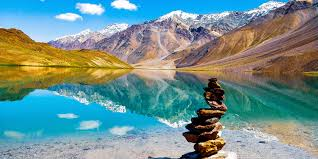
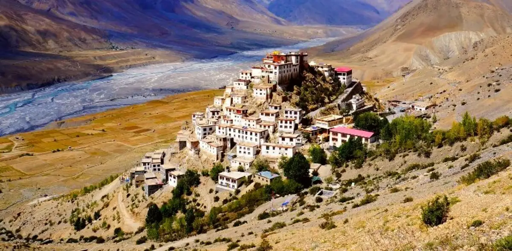
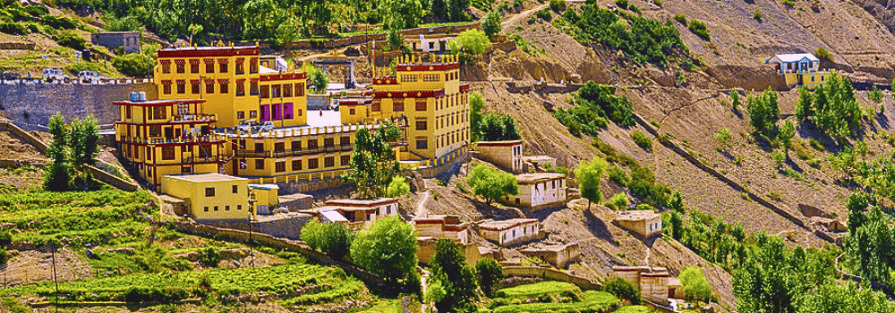

Places to Visit in Spiti

Key Monastery
Largest monastery in Spiti Valley with ancient scriptures.

Chandratal Lake
High-altitude crescent-shaped lake with stunning reflections.

Kaza
Main town and cultural heart of Spiti Valley.

Dhankar Monastery
Ancient monastery perched on dramatic cliffs.